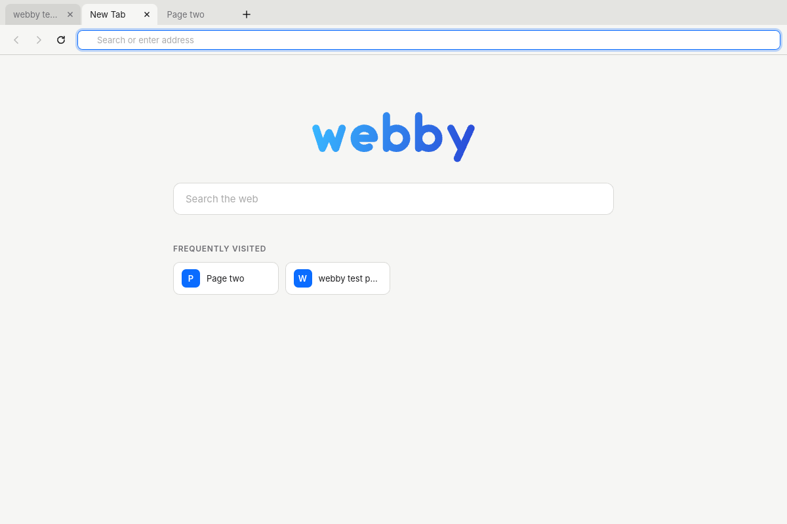

Tabs that behave
Open, close and switch tabs with the mouse or the keyboard. Pop-ups and new-window links open as a tab right next to the page that asked for them.
Open source (MIT) · v0.1.0 · early preview
webby is a small browser written in Rust. It brings the engine behind Safari to Windows, and runs on macOS and Linux too. No Chromium inside.
Free. Windows 10+, macOS 11+, Debian and Ubuntu. All downloads

Features
Open, close and switch tabs with the mouse or the keyboard. Pop-ups and new-window links open as a tab right next to the page that asked for them.
Type a link, a bare site name like example.com, or just what you are looking for. webby works out which, and searches with DuckDuckGo.
Your tabs come back when you reopen webby, and the start page keeps the sites you visit most one click away.
The whole browser, start page included, follows your system appearance without a setting to hunt for.
New tab, close tab, jump to the address bar, reload, back, forward and tab switching all have the shortcuts your hands already know.
No sign-in, no telemetry, no sponsored tiles. History and your open tabs are plain files on your own disk.
Download
Most browsers are Chromium underneath. webby uses WebKit on all three systems, so you can use and test the engine that powers Safari without owning a Mac.
WebKit's own Windows port, bundled in the installer. No WebView2, no Chromium. Installs for your user without an administrator prompt.
Download .exe Windows 10 and 11, 64-bitRuns on the system WebKit, the very engine Safari uses, so pages look and behave exactly as they do there.
Download .dmg macOS 11 or later, Apple silicon and IntelBuilt on WebKitGTK and GTK 4, so it feels at home on a modern desktop and uses the WebKit your distribution keeps patched.
Download .deb Debian and Ubuntu, 64-bitHeads up: webby is an early preview and the installers are not code signed yet. Windows SmartScreen and macOS Gatekeeper will ask you to confirm the first launch. The Linux build is the most tested; Windows and macOS are newer.
How it works
All of the browser's behaviour lives in a platform-independent Rust core: tabs, the address bar, history and session restore. Each system adds only a thin layer that opens windows and hosts its native WebKit.
Open source
webby is developed on GitHub. Read the code, build it yourself, report what breaks, or pick something from the roadmap.
git clone https://github.com/rcdelacruz/webby
cd webby
cargo run --releaseYou need Rust 1.88 or newer. On Linux, install GTK 4 and WebKitGTK 6.0 first; on Windows, one script fetches WebKit. The README has the details.